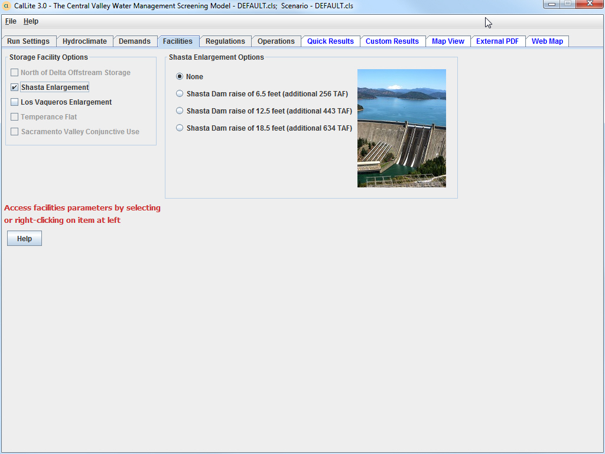

The Facilities dashboard features became active in the current version of CalLite and the user can select neither, either or both of the Shasta and Los Vaqueros enlargements.
Shasta Enlargement - For the purposes of the screening model implementation, three Shasta Dam enlargement alternative dam raises of 6.5-feet (256 TAF), 12.5-feet (443 TAF), and 18.5-feet (634 TAF) are considered. The user is provided with a check box to turn on/off the Shasta Lake Water Resources Investigation (SLWRI) options. If turned on, the user has three more check boxes representing three enlargement alternatives to choose from. Once the user selects a new size, all the related inputs are activated within the model.

Los Vaqueros Enlargement - The Los Vaqueros Expansion Model was developed to run planning and operations simulations of key Contra Costa Water District facilities. Those facilities include Delta intakes at Rock Slough, Old River, and Middle River (Victoria Canal), Los Vaqueros Reservoir, Old River Pipeline, the Transfer Facility and Transfer Pipeline, Los Vaqueros Pipeline, and the Contra Costa Canal. Los Vaqueros Reservoir was built and expanded to reduce the salinity of water delivered to the CCWD service area. This is done by filling Los Vaqueros when there is low salinity at the Old and Middle River intakes and releasing water for blending when Delta salinity is high.
There are proposals to expand Los Vaqueros beyond its current 160 TAF capacity. The CalLite user is allowed to test different Los Vaqueros storage capacities to see how the system responds. Increased capacity will result in increased Delta diversions when salinity is low and reduced Delta diversions when salinity is high. This can effect CVP and SWP export operations if there are changes at Old and Middle River intake diversions when Old and Middle River flow criteria are controlling exports. Changes in storage capacity can also affect diversions of CCWD CVP contract supply.